# 疑问
# 学习成果
- 关于模型性能的学习（理论较多）
- 去实践了一个小项目
- 阅读了 Geomagnetism for Smartphone-Based Indoor Localization: Challenges, Advances, and Comparisons 的 Introduction（5 页）
# 地磁定位
# 介绍
基于智能手机的室内定位是一个实用的研究方向。多种信号曾被用于室内定位，包括 Wi-Fi，惯性导航， 图像，磁场，声音等。然而相比其它信号，地磁信号因为它的普遍性和「不依赖额外的设施的特性」受到关注。
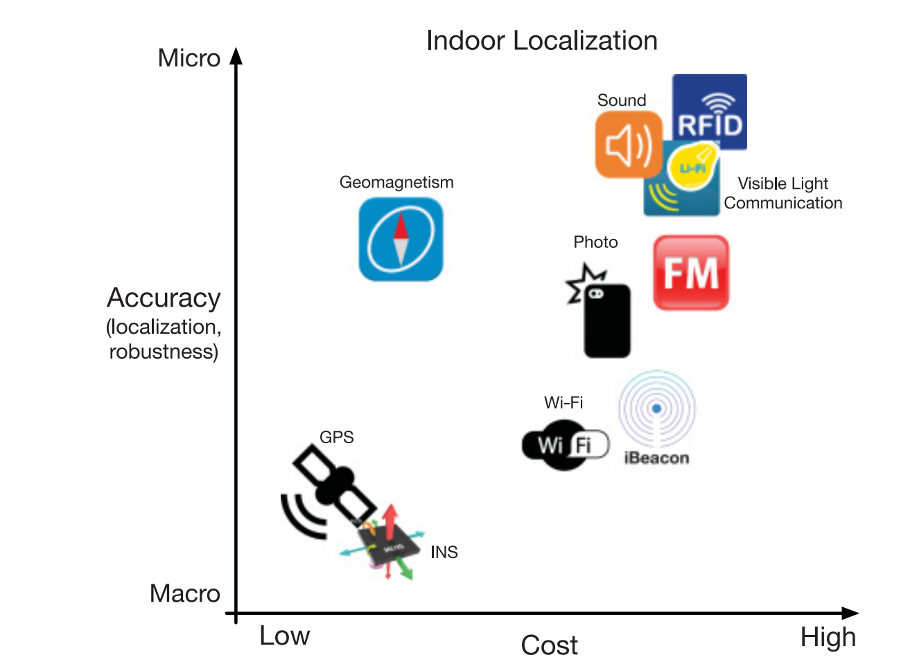
图 1—— 基于地磁的室内定位经济且具有较高的准确率
通常，地磁场的扰动可以唯一确定一个位置。地磁场的扰动可以视作自然磁场和铁磁物体产生的磁场的叠加。本文对地磁室内定位（基于智能手机）进行综述，讨论目前的方案、挑战、和前景。
具体来说，基于地磁的室内定位有三个阶段：地磁场测量，信号地图（signal map）与数据库建设，目标定位。
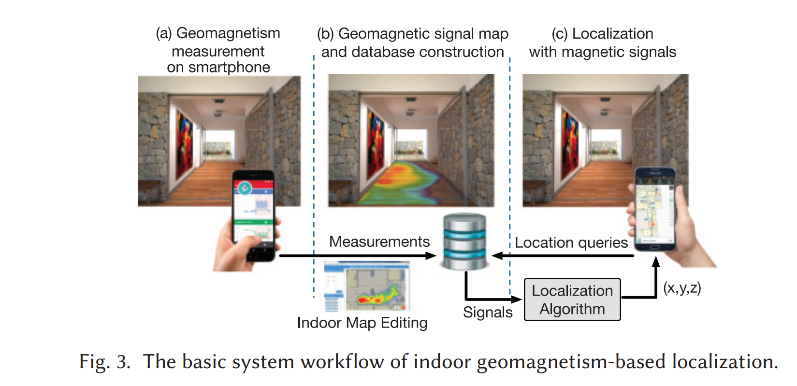
- 地磁场测量
- 用智能手机可以测量，但需要考虑噪音，校准，铁磁材料影响，依赖设备等问题。
- 信号地图与数据库建设
- 信号地图表示室内信号与位置的映射关系
- 一个需要大量劳动的工作
- 构建完仍然需要动态更新
- 目标定位
- 在室内定位智能手机的位置
# 实践 Kaggle 房价预测
# 遇到的 bug
- 数据集太大导致 get_dummies 方法把训练集搞的太大了以至于内存装不下。
- 解决方法：一开始是把所有字符串类全都删去，但是 loss 从 0.6 直接到了 7.6，因此考虑仅仅把数据集中的 "Summary" 字段删去，因为这个字段的内容是卖家对房子的描述，是一个很长的字符串而且没有什么显著的规律。
- 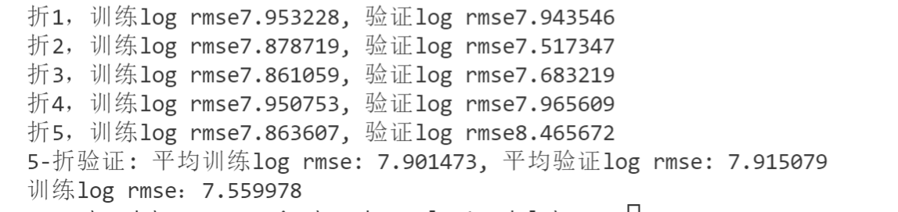
- 最后放弃了很多字符串特征，才能装进内存。。 目前误差仍然很大
# 模型选择
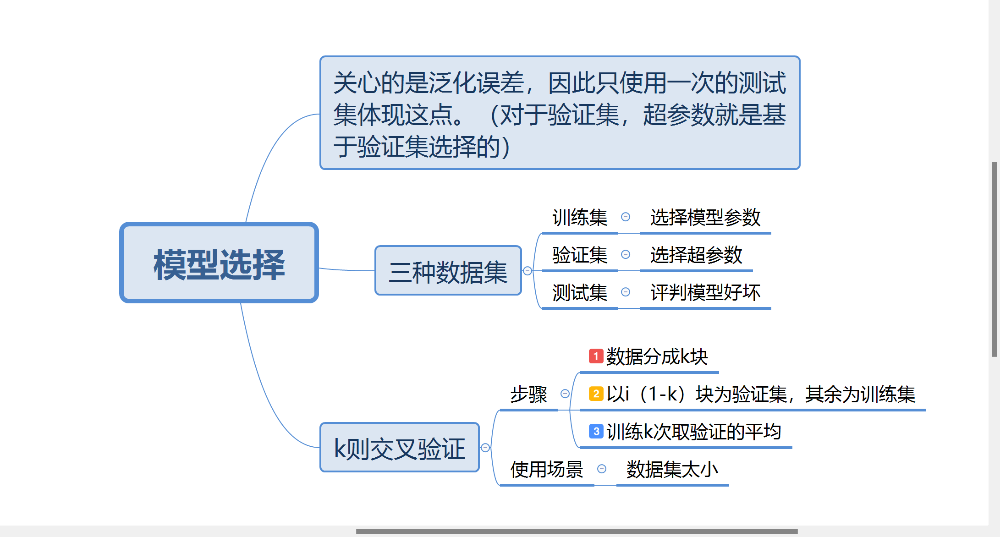
# 过拟合和欠拟合
# 模型容量
拟合数据的能力
eg：模型容量小，就不能拟合复杂的训练数据，这种现象也叫做欠拟合。
eg：模型容量大，甚至可能记住所有训练数据，但这并不一定好，可能也记住了数据中的噪音，可能过于关注训练数据中的某些细节导致泛化能力并不强。—— 过拟合
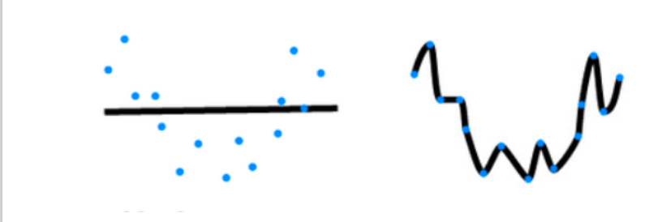
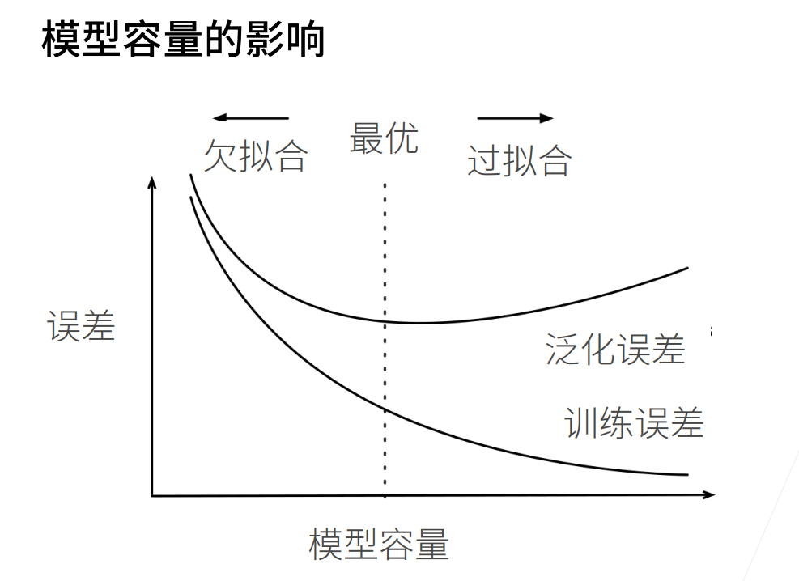
# 衡量模型容量
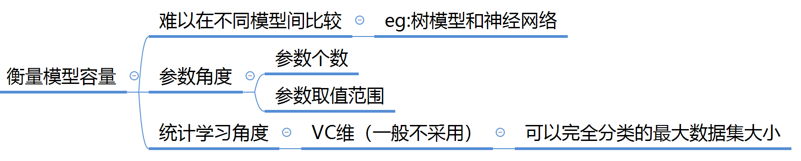
# 总结
1、模型复杂度需要匹配数据复杂度。
2、尽管统计机器学习提供数学工具评判模型复杂度，但实践中一般靠观察训练和验证误差的差距衡量。
# 控制模型容量
# 权重衰退
控制参数范围降低模型复杂度，具体来说，希望 w 的 L2 范数更小一些。
让 w 偏向于原点。
# 丢弃法
将一部分隐藏层输出置 0，一部分缩放，使得数学期望不变。
# 数值稳定性
# 梯度爆炸与消失
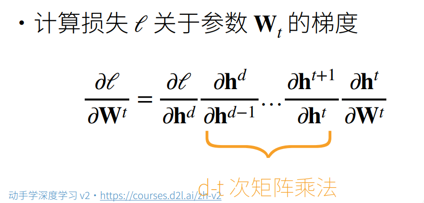
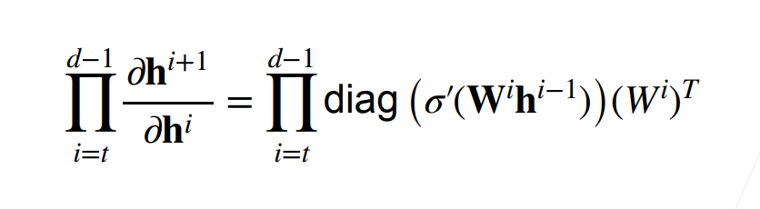
如果使用 ReLu 作为激活函数
- 如果 d-t 比较大，那么数值会很大。ReLu 导数不是 1 就是 0
使用 sigmoid，导数值小于 1，d-t 很大时，累乘导致梯度消失
# 模型初始化
为了让数值稳定，我们希望输出（前向），梯度（反向）的期望和方差都保持一致。因而需要选取合适的「初始模型参数」和「激活函数」。
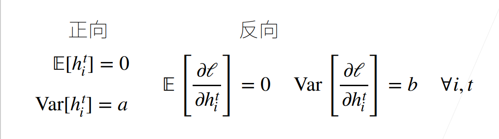
为了保持上述要求，模型应该满足：
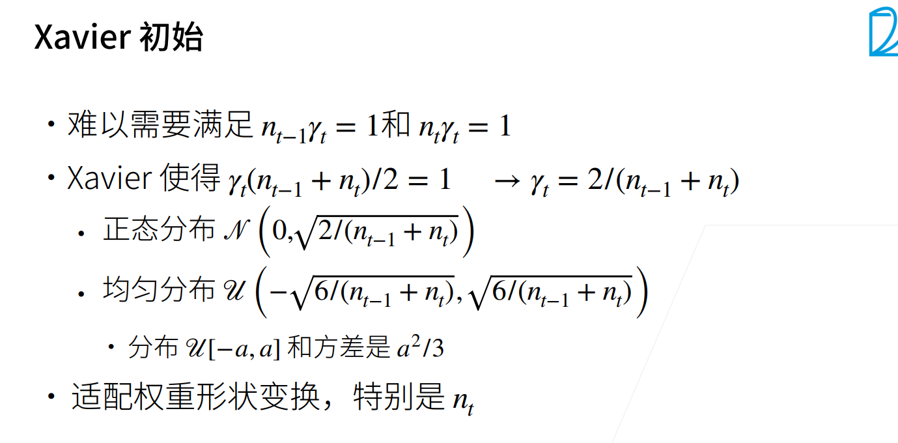
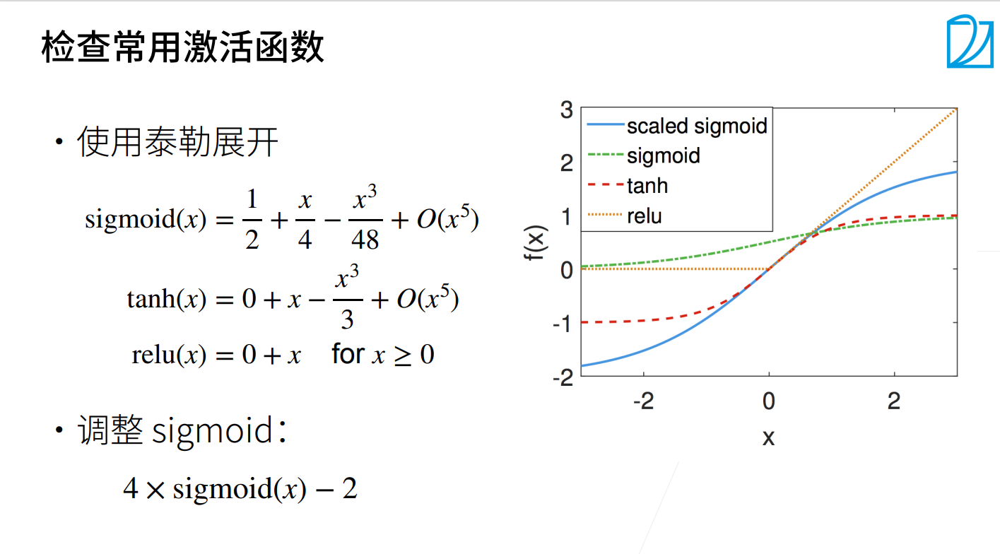
# Python 语法
'''pandas.DataFrame 保留一些列 和 删除一些列''' | |
# 例子 | |
# numeric_features 是索引，一个 array_like 的对象。 | |
'''保留列''' | |
all_features = all_features[numeric_features] | |
train_data = train_data[numeric_features] | |
test_data = test_data[numeric_features.drop('SalePrice')] | |
'''删除列''' | |
remove_features = ['Summary','Address','High School','Flooring','Heating features','Cooling features','Laundry features','Parking features','City','Region','Heating','Cooling','Elementary School','Bedrooms','Parking','Middle School','Laundry features','Appliances included'] #有些特征所有样本都不一样，无法参考 | |
all_features.drop(columns=remove_features,inplace=True) | |
train_data.drop(columns=remove_features,inplace=True) | |
test_data.drop(columns=remove_features,inplace=True) |